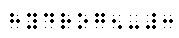
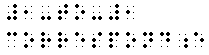
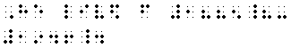
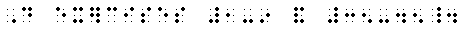
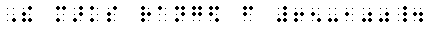
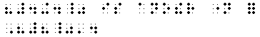
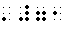
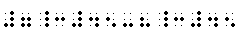
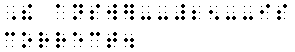

Representation of Arabic Numerals: In the transcription of a technical text, digits are represented in two ways:
- English Braille Numerals: English braille numerals represented by the letters "a" through "j" must be used for all Arabic numerals appearing on title pages, except those used in conjunction with mathematical symbols. English braille numerals must also be used for page numbers at the corners of pages and at the ends of page-separation lines.
- Nemeth Code Numerals: In the Nemeth code, the 10 Arabic digits are represented by the letters "a" through "j" dropped to the lower part of the braille cell. Except as stated in a above, Nemeth code numerals must be used to represent all Arabic numerals in the body of the print text, forewards, contents pages, introductions, bibliographies, and indexes. They must also be used for all chapter, theorem, exercise, problem, and page-reference numbers.
Numeric Indicator: 
In a technical text, the numeric indicator must be used before a numeral following a space or occurring at the beginning of a braille line. However, the numeric indicator must not be used after a space intentionally inserted to divide a numeral into short regular groups of digits.
- 7
- 32
 
- 5980
 
- 9 inches and 15 inches are 2 feet.

- 931684572 can be divided into groups of three digits each: 931 684 572

Numeric Indicator and Punctuation Marks:
- The numeric indicator must be used after a hyphen connecting a numeral to a preceding word or punctuation mark.
- hydrogen-3

- 1-to-1 correspondence

- He lived from 1885?-1946.

- The numeric indicator must not be used after a hyphen connecting a numeral to a preceding numeral or other mathematical expression, or after the mathematical comma in a long numeral. The numeric indicator must be used in all other instances when a numeral follows a punctuation mark.
- Do exercises 1-9 and 35-45.

- The marks ranged from 65-100.

- 1,674,932
- "12 dozen"
- "4 + 4" is another name for '8'.

- '71

- He arrived at 7:45.
- 7:45-8:45

- The answer -25- is correct.

- 50-60
Numeric Indicator With the Minus Sign: The numeric indicator must be used before a numeral following a minus sign when the minus sign follows a space or a punctuation mark, or begins a braille line.
- Is -5 a negative number?
- Is -6 < -1?
- ±5 means +5 and -5.
- "-3 is a negative number."
- -4 is the opposite of +4.
- -50 + 9 - 2 = -43
|


 Tჸe $_hodor bARionlegitim@.
Tჸe $_hodor bARionlegitim@.